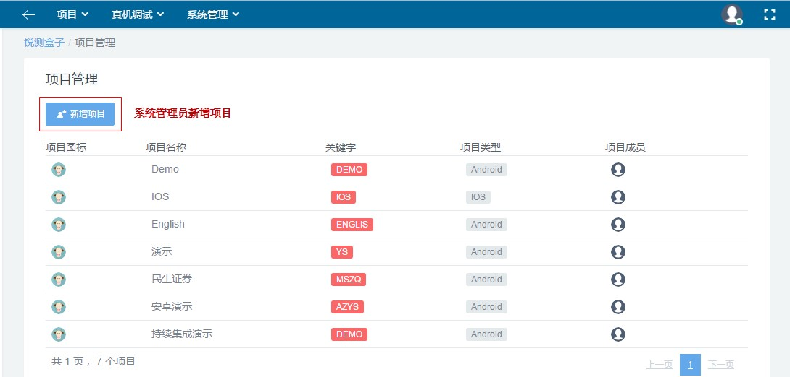
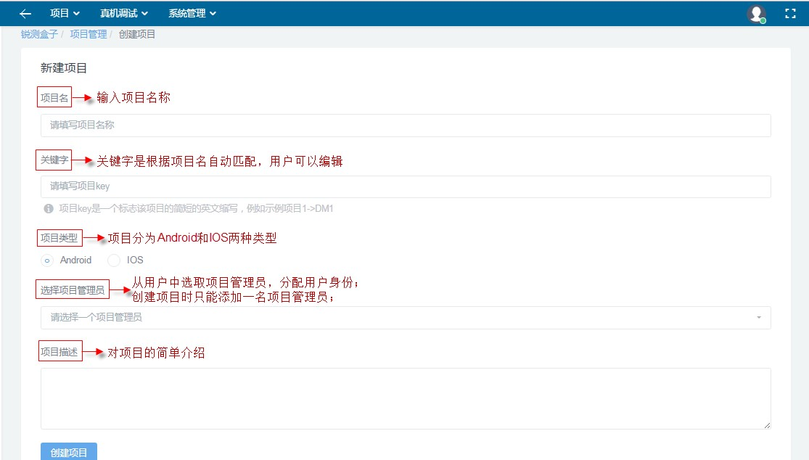

1.3.2 项目管理
项目管理目前提供新增项目和项目列表功能。新增项目是指系统管理员可以添加新的项目，详情见本页下“新增项目”章节。项目列表是系统根据用户身份罗列出有管理和维护权限的所有项目，如下图所示。

系统管理中项目管理页面图
1.3.2.1 新增项目
系统管理员拥有添加项目的权限。新增项目时需要输入项目信息，包括项目名、关键字、项目类型、项目管理员和项目描述，如下图所示。

锐测盒子项目创建-新增项目图
项目类型分为Android和IOS两种。Android项目中使用Android设备和.apk运行包，进行兼容性测试(Monkey、SmartMonkey)、自动化脚本测试(Appium、Robotium和Uiautomator)和遍历测试；IOS项目中使用IOS设备和.ipa运行包，进行兼容测试(Monkey)和自动化脚本测试(Appium)。详情参见“任务管理”章节。